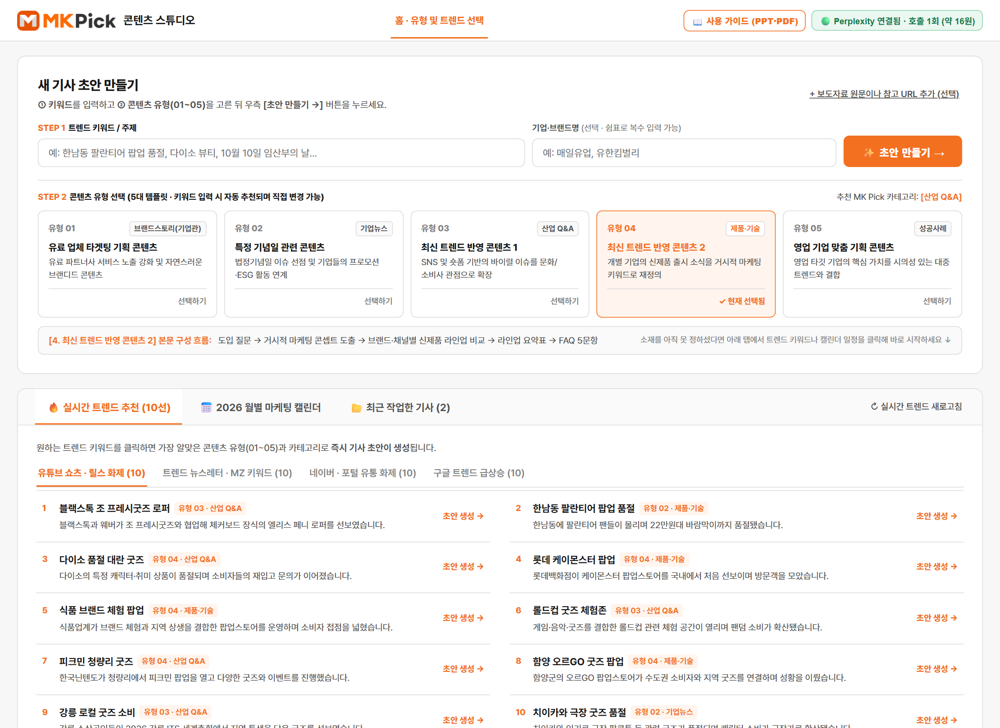
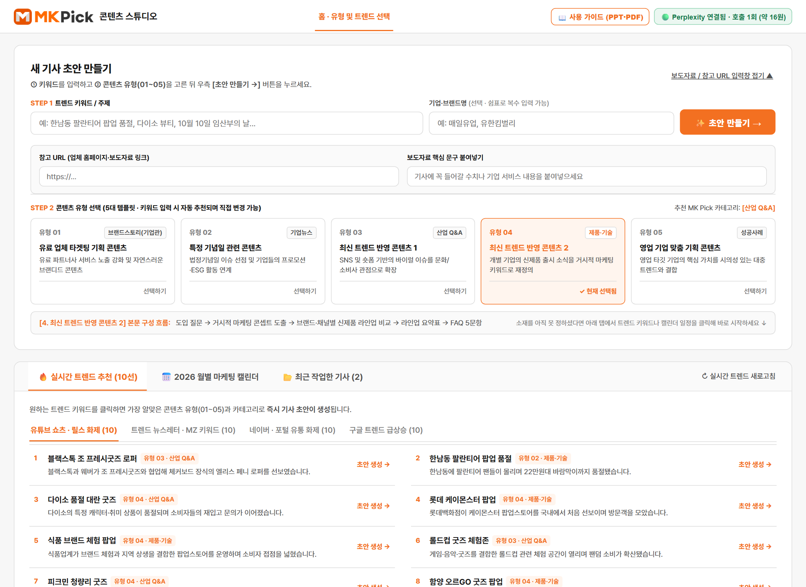
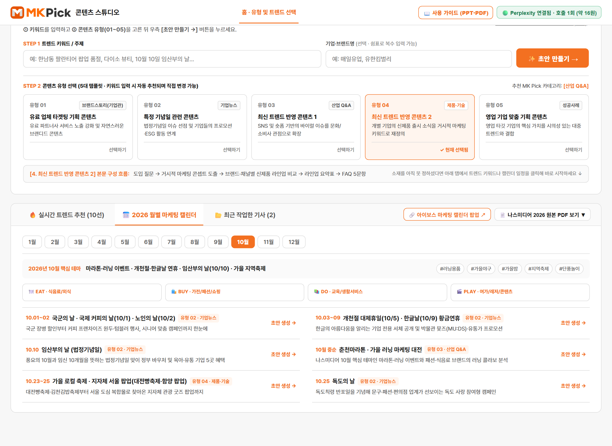
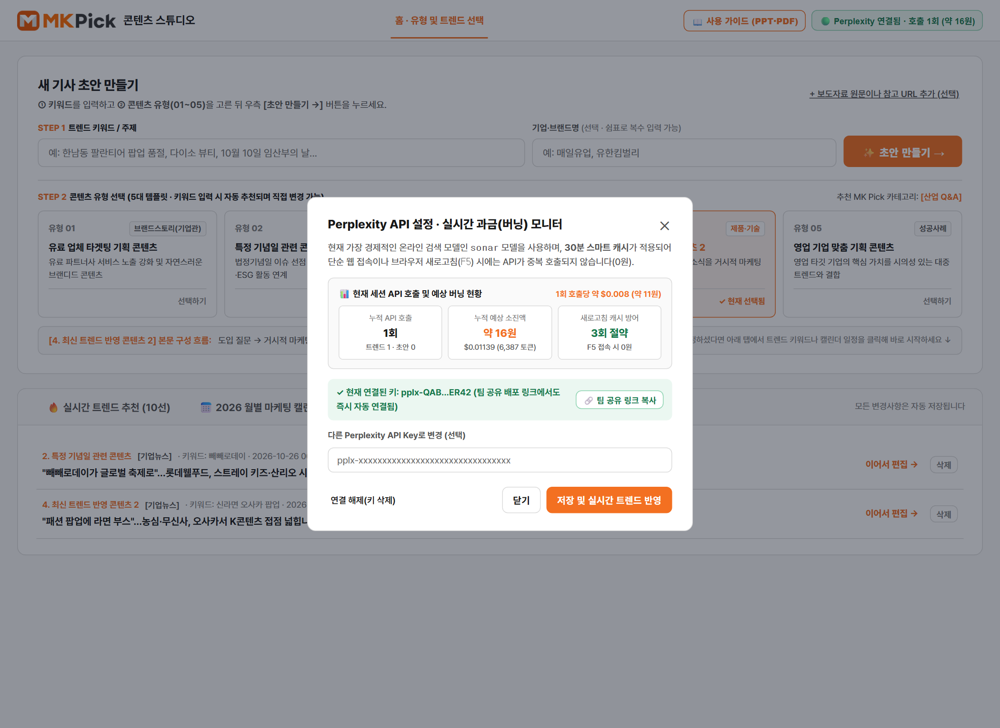
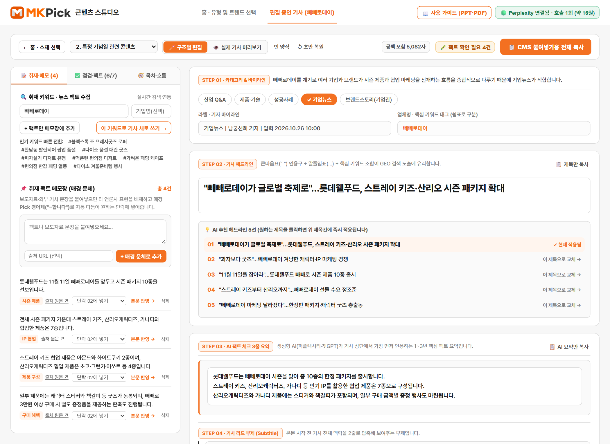
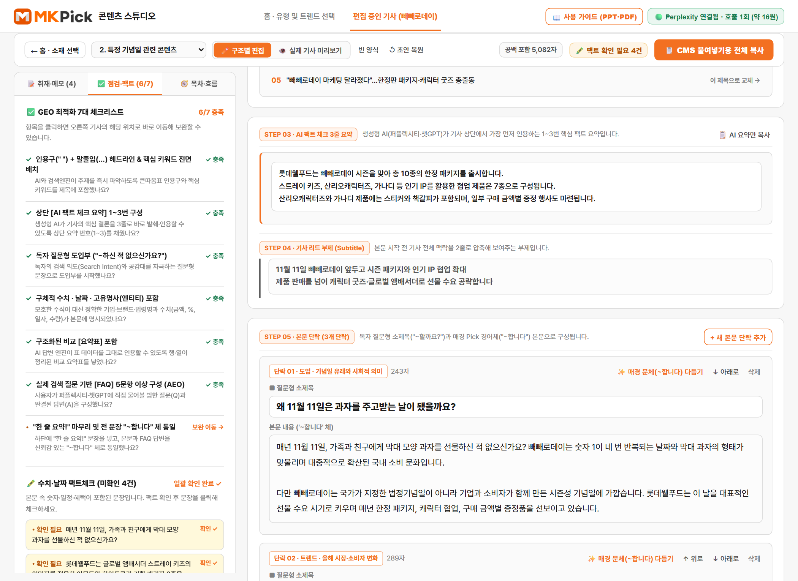
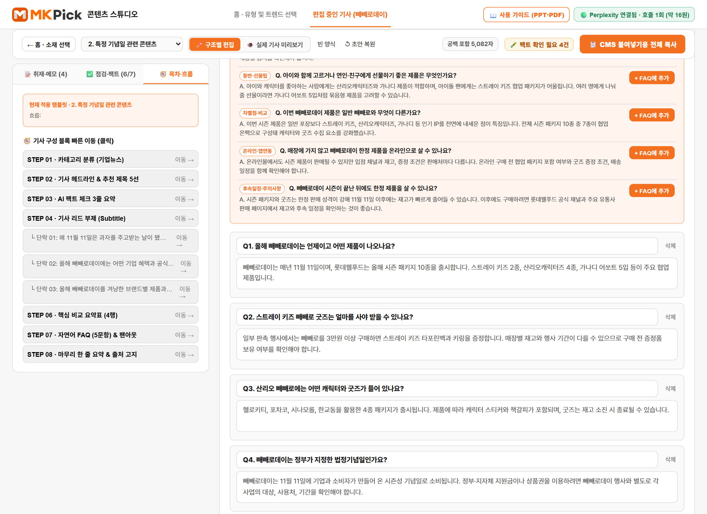
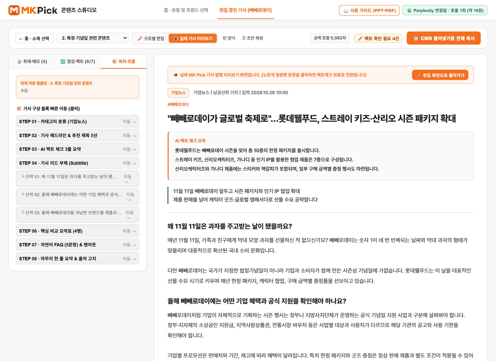

처음 접속하는 실무자도 이 문서 하나로 트렌드 발굴부터 GEO·AEO 최적화 기사 작성, 팩트체크, CMS 등록까지 5분 안에 끝낼 수 있습니다.
홈 화면은 불필요한 복잡함을 없애고 ① 상단 [새 기사 초안 만들기] 카드와 ② 하단 [소재 발굴 & 작업 보관함] 카드의 2단 구조로 구성되어 있습니다.

Enter) 즉시 AI 기사 초안이 생성됩니다. 기업·브랜드명을 쉼표(,)로 여러 개 적으면 복수 기업을 함께 다룹니다.
유형(01~05)에 따라 기사 본문 단락의 논리 구조, 요약표 비교 항목, FAQ 문항 수(5문항 vs 7문항), 추천 MK Pick 카테고리가 달라집니다.

| 콘텐츠 유형 | 기본 카테고리 | 본문 3단락 구성 흐름 및 특징 | FAQ 수 |
|---|---|---|---|
| 유형 01 유료 업체 타겟팅 기획 |
브랜드스토리(기업관) | ① 과거 vs 현재 트렌드 비교 → ② 파트너사 및 주요 업체 4곳 서비스·혜택 집중 소개 → ③ 업체 선택 기준 | 7문항 |
| 유형 02 특정 기념일 관련 콘텐츠 |
기업뉴스 | ① 기념일 유래·법적 배경 → ② 정부·지자체 바우처 → ③ 참여 브랜드별(■ [브랜드명]) 캠페인·제품 각각 소개 |
5문항 |
| 유형 03 최신 트렌드 1 (숏폼·바이럴) |
산업 Q&A | ① 과거 원조부터 현재까지 유행 계보 → ② MZ세대가 열광하는 소비 심리 4가지 분석 → ③ 문화·유통 시사점 | 5문항 |
| 유형 04 최신 트렌드 2 (신제품·팝업) |
제품·기술 | ① 신제품들을 관통하는 거시적 마케팅 콘셉트 → ② 브랜드·채널별 전용 라인업 비교 → ③ 오픈런·입고 구매 팁 | 5문항 |
| 유형 05 영업 기업 맞춤 기획 |
성공사례 | ① Q1~Q4 시장 메가 트렌드·소비자 페인포인트 문답 → ② Q5~Q6 선택 기준 후 마지막 Q7에서 타깃 기업 솔루션 집중 조명 | 7문항 |
10월 10일 임산부의 날이나 빼빼로데이처럼 여러 기업을 한 기사에서 소개하고 싶을 때는 기업·브랜드명 칸에 매일유업, 유한킴벌리, 일동후디스처럼 쉼표(,)로 구분해 입력하세요. 본문 3번째 단락에 각 브랜드별 소항목(■ [브랜드명] 캠페인·제품)과 브랜드 비교 요약표가 자동으로 만들어집니다.
오늘 가장 화제가 되고 있는 4대 채널별 실시간 트렌드 키워드 10개씩(총 40개)을 확인하고, 클릭 한 번으로 즉시 초안을 만듭니다.
한남동 팔란티어 팝업 품절 클릭 시 팝업·신제품 분석 템플릿으로 즉시 생성)
KT 나스미디어·아이보스 마케팅 캘린더를 기반으로 월별 시즌 기획 기사를 미리 준비하고, 작업 중인 기사를 안전하게 관리합니다.

1월~12월)을 클릭하면 해당 월의 핵심 마케팅 테마, 추천 해시태그, 그리고 4대 업종별(🍽️ 식음료/외식 · 🛍️ 가전/패션/쇼핑 · 📚 교육/생활 · 🎬 여가/콘텐츠) 중점 아이템이 한눈에 표시됩니다.
10.10 임산부의 날, 11.11 빼빼로데이 등)를 클릭하면 해당 기념일·시즌에 가장 적합한 콘텐츠 유형으로 즉시 기사 초안이 생성됩니다.
[삭제] 버튼으로 지울 수 있습니다.
화면 우측 상단의 초록색 [🟢 Perplexity 연결됨 · 호출 N회 (약 X원)] 버튼을 누르면 API 소진 현황과 공유 링크를 확인할 수 있습니다.

sonar 모델(1회 호출당 약 $0.008, 한화 약 11~15원)을 사용하며, 30분 스마트 캐시가 적용되어 있습니다. 따라서 웹페이지에 접속하거나 새로고침(F5)을 여러 번 눌러도 API가 중복 호출되지 않아 요금이 전혀 나가지 않습니다(0원).
약 N원)와 달러($0.000)로 투명하게 표시PERPLEXITY_API_KEY)가 등록된 배포 링크로 접속하면 팀원 누구나 별도 키 입력 없이 즉시 🟢 Perplexity 연결됨 상태로 사용할 수 있습니다.
pplx-...)로 교체하고 싶다면 입력칸에 붙여넣고 저장 및 실시간 트렌드 반영을 누르세요.
키워드나 트렌드를 클릭해 초안이 생성되면 열리는 화면입니다. 스크롤을 내려도 상단 액션 바와 좌측 보조 패널이 따라오며 편집을 돕습니다.

빈 양식 & ↺ 초안 복원 텍스트 버튼편집 도중 추가 팩트를 검색하거나, 외부 보도자료 문장을 매경 경어체("~합니다")로 자동 변환해 원하는 본문 단락에 끼워 넣습니다.
[+ 팩트만 메모장에 추가] (안전 추가): 오른쪽에서 열심히 수정 중인 기사 본문은 절대 건드리지 않고, 입력한 키워드의 최신 뉴스 팩트만 추출해 아래 취재 메모장 카드에 추가합니다.#해시태그 8선)#한남동 팔란티어 팝업 품절 등 실시간 인기 해시태그를 클릭하면 즉시 해당 주제의 새 기사 초안으로 전환됩니다.
"~합니다/습니다")로 자동 변환해 메모장에 저장합니다.
[넣을 위치 선택 ▼] + 본문 반영 →AI 3줄 요약에 넣기 또는 단락 01~03에 넣기를 고른 뒤 본문 반영 →을 클릭하세요! 오른쪽 기사의 해당 위치 끝에 문장이 즉시 추가되며 주황색으로 깜빡여 위치를 알려줍니다.
출고 전 GEO 7대 최적화 점수와 수치·날짜 팩트체크를 완료하고, 목차 탭으로 긴 기사의 원하는 단락에 0.1초 만에 이동합니다.

" ") + 말줄임(…) 제목 ② 상단 AI 팩트 요약 3줄 ③ 독자 질문형 도입부(~나요?) ④ 구체적 수치·날짜·고유명사 ⑤ 구조화된 비교 요약표 ⑥ 자연어 FAQ 5문항 이상 ⑦ "한 줄 요약!" 마무리 및 ~합니다 체 통일
STEP 01부터 STEP 08(및 각 본문 소제목 단락) 목차가 나열됩니다. 원하는 항목을 클릭하면 긴 스크롤 없이 즉시 해당 단락으로 이동합니다.
오른쪽 편집기는 모든 입력창이 내용 길이에 맞춰 자동으로 늘어나며, 개별 영역 복사와 문체 자동 다듬기 기능을 제공합니다.
라벨 · 기자 바이라인 첫머리도 즉시 함께 변경됩니다.
[📋 제목만 복사]로 제목만 따로 복사할 수 있습니다.
[📋 AI 요약만 복사] 버튼을 누르면 3줄 요약만 클립보드에 복사됩니다.
~할까요? / ~인가요?)과 본문으로 구성되며 실시간 글자 수가 표시됩니다.~한다/이다/했다) 문장이 즉시 ~합니다/입니다/했습니다 체로 자동 변환됩니다![↑ 위로] / [↓ 아래로] / [삭제] / + 새 질문 단락 추가로 구성을 자유롭게 편집하세요.
AI 답변 엔진이 표와 Q&A로 즉시 채택할 수 있도록 비교 요약표와 구어체 자연어 FAQ(쿼리 팬아웃 추천 질문 8선 포함)를 완성합니다.

[+ 열 추가]로 비교 기준 열을 추가할 수 있으며, 각 행 우측 [✕] 버튼으로 행을 삭제합니다. ([📋 요약표만 복사] 지원)
+ 직접 질문 추가) 및 개별 복사 (📋 FAQ만 복사)[삭제]로 지울 수 있고, [+ 직접 질문 추가]로 새 문항을 추가할 수 있습니다.
"한 줄 요약! ~입니다." 문장, 대표 이미지 캡션 문구(< 출처 : 각 사 제공 >), 하단 고지 문구, 그리고 기사 작성에 참고한 출처 목록(체크박스로 특정 출처 본문 표기 포함/제외 선택 가능)을 최종 관리합니다.
출고 직전 미리보기 모드에서 노란색 형광펜 팩트체크를 마저 완료하고, [📋 CMS 붙여넣기용 전체 복사]로 출고를 마무리합니다.

F5 새로고침 시에는 캐시된 트렌드를 즉시 보여주어 API 요금이 소진되지 않습니다.
■)·요약표·FAQ 순수 텍스트 포맷으로 복사하므로, CMS 본문창에 Ctrl + V만 하시면 깔끔하게 등록됩니다!